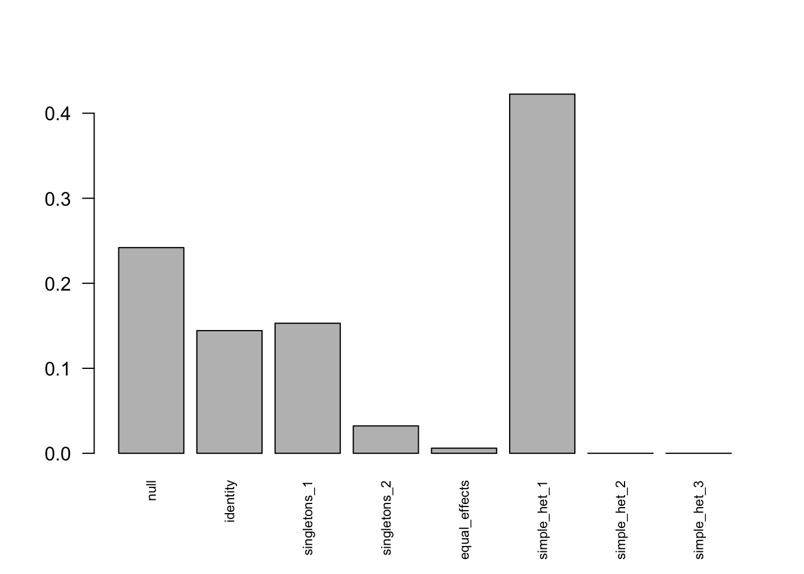
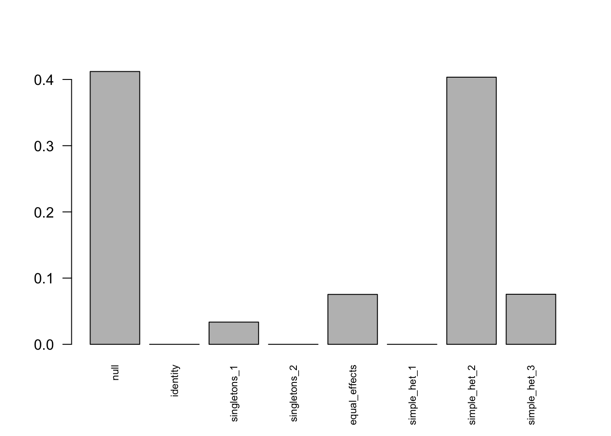
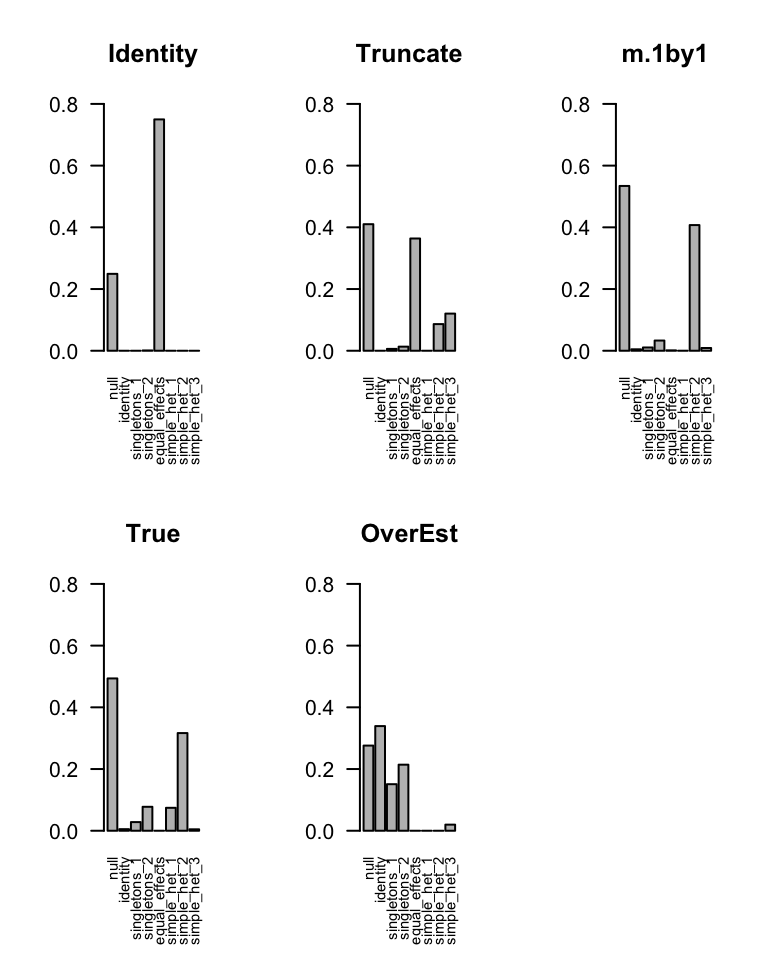
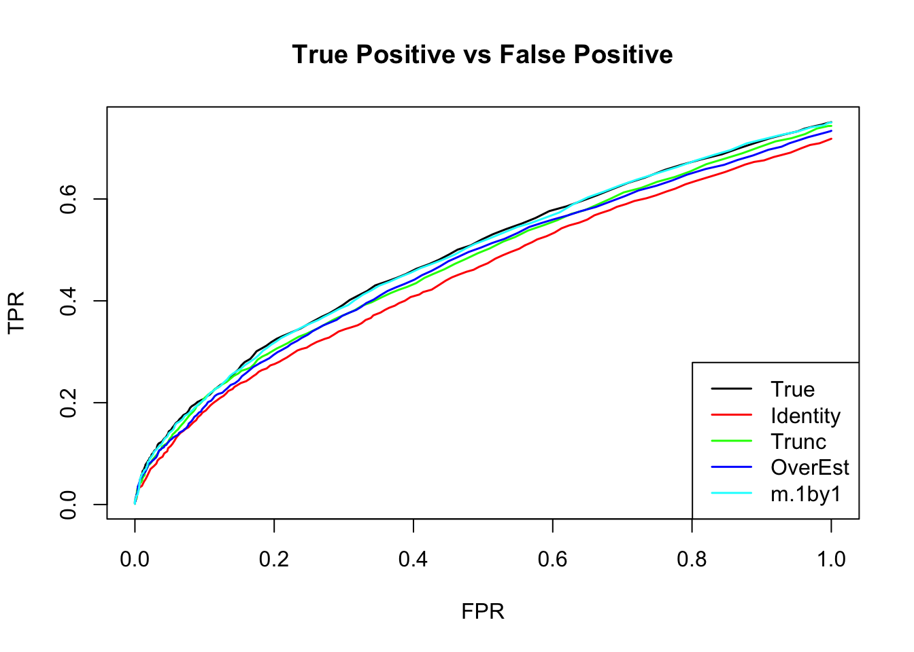

Estimate Null Correlation Problem
Yuxin Zou
2018-07-09
library(mashr)Loading required package: ashrIn my simple simulation, the current approach underestimate the null correlation. We need to find better positive definite estimator. We could try to estimate the pairwise correlation, ie. mle of sum( pi_{lk} N_{2}(0, V + w_{l}U_{k})) for any pair of conditions
Simple simulation in R^2 to illustrate the problem: \[ \hat{\beta}|\beta \sim N_{2}(\hat{\beta}; \beta, \left(\begin{matrix} 1 & 0.5 \\ 0.5 & 1 \end{matrix}\right)) \]
\[ \beta \sim \frac{1}{4}\delta_{0} + \frac{1}{4}N_{2}(0, \left(\begin{matrix} 1 & 0 \\ 0 & 0 \end{matrix}\right)) + \frac{1}{4}N_{2}(0, \left(\begin{matrix} 0 & 0 \\ 0 & 1 \end{matrix}\right)) + \frac{1}{4}N_{2}(0, \left(\begin{matrix} 1 & 1 \\ 1 & 1 \end{matrix}\right)) \]
\(\Rightarrow\) \[ \hat{\beta} \sim \frac{1}{4}N_{2}(0, \left( \begin{matrix} 1 & 0.5 \\ 0.5 & 1 \end{matrix} \right)) + \frac{1}{4}N_{2}(0, \left( \begin{matrix} 2 & 0.5 \\ 0.5 & 1 \end{matrix} \right)) + \frac{1}{4}N_{2}(0, \left( \begin{matrix} 1 & 0.5 \\ 0.5 & 2 \end{matrix} \right)) + \frac{1}{4}N_{2}(0, \left( \begin{matrix} 2 & 1.5 \\ 1.5 & 2 \end{matrix} \right)) \]
set.seed(1)
n = 500; p = 2
Sigma = matrix(c(1,0.5,0.5,1),p,p)
beta.0 = beta.1 = beta.2 = beta.3 = matrix(0,n,p)
beta.1[,1] = rnorm(n)
beta.2[,2] = rnorm(n)
beta.3[,1] = rnorm(n)
beta.3[,2] = beta.3[,1]
Beta = rbind(beta.0, beta.1, beta.2, beta.3)
E = MASS::mvrnorm(n*4, rep(0, p), Sigma)
Bhat = Beta + E
SE = 1Using truncated empirical correlation
mash.data = mash_set_data(Bhat, SE)
Vhat = estimate_null_correlation(mash.data, apply_lower_bound = FALSE)
Vhat [,1] [,2]
[1,] 1.0000000 0.3877533
[2,] 0.3877533 1.0000000We underestimate the correlation among measurement errors.
Let’s see the result from mash
# Use underestimate cor
mash.data.V = mash_set_data(Bhat, SE, V=Vhat)
U.c = cov_canonical(mash.data.V)
m.V = mash(mash.data.V, U.c) - Computing 2000 x 106 likelihood matrix.
- Likelihood calculations took 0.02 seconds.
- Fitting model with 106 mixture components.
- Model fitting took 0.31 seconds.
- Computing posterior matrices.
- Computation allocated took 0.02 seconds.barplot(get_estimated_pi(m.V), las=2, cex.names = 0.7) The loglikelihood is
The loglikelihood is
get_loglik(m.V)[1] -6299.462Let’s try what will happen if overestimate correlation
# If we overestimate cor
V.o = matrix(c(1,0.75,0.75,1),2,2)
mash.data.Vo = mash_set_data(Bhat, SE, V=V.o)
m.Vo = mash(mash.data.Vo, U.c) - Computing 2000 x 106 likelihood matrix.
- Likelihood calculations took 0.02 seconds.
- Fitting model with 106 mixture components.
- Model fitting took 0.21 seconds.
- Computing posterior matrices.
- Computation allocated took 0.02 seconds.barplot(get_estimated_pi(m.Vo), las=2, cex.names = 0.7) The lohlikelihood is
get_loglik(m.Vo)[1] -6295.582What will happen if we have correct correlation
# With correct cor
mash.data.correct = mash_set_data(Bhat, SE, V=Sigma)
m.correct = mash(mash.data.correct, U.c) - Computing 2000 x 106 likelihood matrix.
- Likelihood calculations took 0.02 seconds.
- Fitting model with 106 mixture components.
- Model fitting took 0.16 seconds.
- Computing posterior matrices.
- Computation allocated took 0.00 seconds.barplot(get_estimated_pi(m.correct), las=2, cex.names = 0.7)
The loglikelihood is
get_loglik(m.correct)[1] -6297.108mash 1 by 1
We run ash for each condition, and estimate correlation matrix based on the non-significant genes. The estimated cor is closer to the truth. It overestimates the cor.
m.1by1 = mash_1by1(mash.data)
strong = get_significant_results(m.1by1)
V.mash = cor(Bhat[-strong,])
V.mash [,1] [,2]
[1,] 1.000000 0.519426
[2,] 0.519426 1.000000mash.data.1by1 = mash_set_data(Bhat, SE, V=V.mash)
m.V1by1 = mash(mash.data.1by1, U.c) - Computing 2000 x 106 likelihood matrix.
- Likelihood calculations took 0.02 seconds.
- Fitting model with 106 mixture components.
- Model fitting took 0.16 seconds.
- Computing posterior matrices.
- Computation allocated took 0.00 seconds.barplot(get_estimated_pi(m.V1by1), las=2, cex.names = 0.7)
The loglikelihood is
get_loglik(m.V1by1)[1] -6296.748MLE
K=1
Suppose a simple extreme case \[ \left(\begin{matrix} \hat{x} \\ \hat{y} \end{matrix} \right)| \left(\begin{matrix} x \\ y \end{matrix} \right) \sim N_{2}(\left(\begin{matrix} \hat{x} \\ \hat{y} \end{matrix} \right); \left(\begin{matrix} x \\ y \end{matrix} \right), \left( \begin{matrix} 1 & \rho \\ \rho & 1 \end{matrix}\right)) \] \[ \left(\begin{matrix} x \\ y \end{matrix} \right) \sim \delta_{0} \] \(\Rightarrow\) \[ \left(\begin{matrix} \hat{x} \\ \hat{y} \end{matrix} \right) \sim N_{2}(\left(\begin{matrix} \hat{x} \\ \hat{y} \end{matrix} \right); \left(\begin{matrix} 0 \\ 0 \end{matrix} \right), \left( \begin{matrix} 1 & \rho \\ \rho & 1 \end{matrix}\right)) \]
\[ f(\hat{x},\hat{y}) = \prod_{i=1}^{n} \frac{1}{2\pi\sqrt{1-\rho^2}} \exp \{-\frac{1}{2(1-\rho^2)}\left[ \hat{x}_{i}^2 + \hat{y}_{i}^2 - 2\rho \hat{x}_{i}\hat{y}_{i}\right] \} \] The MLE of \(\rho\): \[ \begin{align*} l(\rho) &= -\frac{n}{2}\log(1-\rho^2) - \frac{1}{2(1-\rho^2)}\left( \sum_{i=1}^{n} x_{i}^2 + y_{i}^2 - 2\rho x_{i}y_{i} \right) \\ l(\rho)' &= \frac{n\rho}{1-\rho^2} - \frac{\rho}{(1-\rho^2)^2} \sum_{i=1}^{n} (x_{i}^2 + y_{i}^2) + \frac{\rho^2 + 1}{(1-\rho^2)^2} \sum_{i=1}^{n} x_{i}y_{i} = 0 \\ &= \rho^{3} - \rho^{2}\frac{1}{n}\sum_{i=1}^{n} x_{i}y_{i} - \left( 1- \frac{1}{n} \sum_{i=1}^{n} x_{i}^{2} + y_{i}^{2} \right) \rho - \frac{1}{n}\sum_{i=1}^{n} x_{i}y_{i} = 0 \\ l(\rho)'' &= \frac{n(\rho^2+1)}{(1-\rho^2)^2} - \frac{1}{2}\left( \frac{8\rho^2}{(1-\rho^2)^{3}} + \frac{2}{(1-\rho^2)^2} \right)\sum_{i=1}^{n}(x_{i}^2 + y_{i}^2) + \{ \left( \frac{8\rho^2}{(1-\rho^2)^{3}} + \frac{2}{(1-\rho^2)^2} \right)\rho + \frac{4\rho}{(1-\rho^2)^2} \}\sum_{i=1}^{n}x_{i}y_{i} \end{align*} \]
The log likelihood is not a concave function in general. The score function has either 1 or 3 real solutions.
Kendall and Stuart (1979) noted that at least one of the roots is real and lies in the interval [−1, 1]. However, it is possible that all three roots are real and in the admissible interval, in which case the likelihood can be evaluated at each root to determine the true maximum likelihood estimate.
I simulate the data with \(\rho=0.75\) 
[1] 0.73\(l(\rho)'\) has one real solution
polyroot(c(- sum(z.null[,1]*z.null[,2]), - (n - sum(z.null[,1]^2 + z.null[,2]^2)), - sum(z.null[,1]*z.null[,2]), n))[1] 0.7331235-0.000000i 0.0340672+1.044881i 0.0340672-1.044881iIn general
The general derivation is in estimate correlation mle
This R Markdown site was created with workflowr